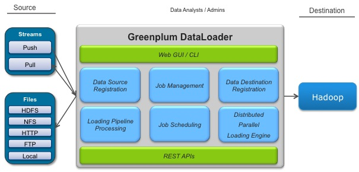
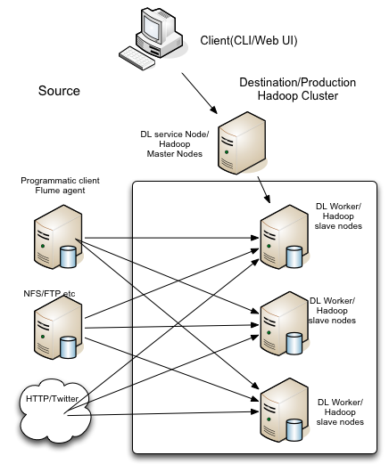
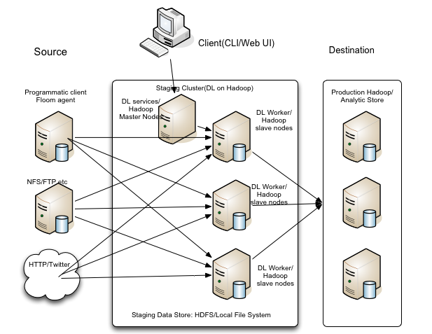
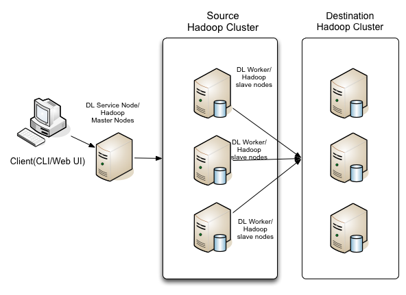
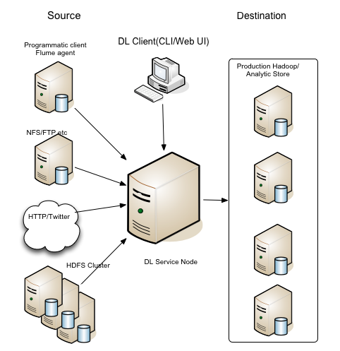

The following notes and concepts are important to understand before beginning DataLoader Installation.
Pivotal DataLoader is an advanced Big Data ingesting tool. It focuses on loading Big Data into Hadoop clusters. It is an enterprise solution for staged, batch data-loading for offline data analytics as well as for realtime data streaming for online incremental data analytics. It also allows easy migration of data between large data cluster deployments.
DataLoader leverages Hadoop MapReduce to run loading jobs as a set of Map tasks. DataLoader can dynamically scale the execution of data loading tasks to maximize the system resource. With single node deployment, it linearly scales out on disk numbers up to the maximum machine bandwidth. With multi-node cluster deployment, it linearly scales out on machine numbers up to the maximum network bandwidth. This horizontal scalability promises optimized and best possible throughput.

Staged, batch data loading is useful when throughput, linear scalability, and resource efficiency are priorities. In batch mode, Pivotal DataLoader can efficiently load large volumes of data.
Real time data streaming is useful in cases where latency, reliability, availability and connectivity are desired. Pivotal DataLoader can load large numbers of data feeds in real time, with linear scalability support.
DataLoader loads data into HDFS. DataLoader provides PXF adaptors to import files and streams in text or Avro format into HAWQ for real-time querying.
DataLoader partitions data into chunks when needed, splits jobs into multiple tasks, schedules the tasks, and handles job failures. Source data locality and network topology is taken into account.
DataLoader provides an easy-to-use interface to:
- Configure, start, and manage loading jobs from the user interface
Manage jobs and data streams from the user interface GUI or command line
- Monitor job progress
Define transformations to be applied in the data loading pipeline
Pivotal DataLoader Components
DataLoader consists of the following components:
| Component | Description |
|---|---|
| DataLoader Manager | Provides an operational and administrative graphical user interface. |
| DataLoader CLI | A command line tool that interacts with DataLoader Manager to provide the command line access for loading job operation. |
| DataLoader Scheduler | Provides a job and task scheduling service. It also provides REST programmatic interface for integration with other tools. |
| DataLoader Web UI | A basic web console which interacts with DataLoader Manager to help user submit batch jobs. |
| DataLoader Worker | Tasks that can be spawned on multiple nodes for transfer of source data. |
Supported Platforms
DataLoader 2.0
- Red Hat Enterprise 6.1-64 bit and 6.2-64 bit
- CentOS 6.1-64 bit and 6.2-64 bit
- Browser: Firefox version 21
DataLoader Capabilities
DataLoader provides the following features.
Distributed, Parallel Loading Engine
- DataLoader provides a "big data pipe" of "data lanes" for moving big data in bulk or as streams in parallel.
- DataLoader supports bulk/batch loading with high throughput for big data and streaming with low latency for fast data.
Job loading with linear scalability through Job Scheduler
- DataLoader leverages commodity hardware for linear scalability: the more machine resources, the higher the aggregated processing power and IO bandwidth.
- Resource scheduling provides best throughput and/or low latency
- Optional bandwidth throttling helps limit bandwidth congestion
- Copy strategies with source and destination optimization
Pluggable architecture to support multiple data stores
- DataLoader provides pluggable data stores and data source protocols.
Pluggable data transformation
- User-defined “data pipelines” with compression, encryption, filtering and related functions; pluggable through JAR files. Transformation is executed at the time of writing the data as part of the map task.
Web UI
The web interface allows you to:
- Configure, start, and manage loading jobs from the user interface
- Manage jobs and data streams from the user interface UI or command line
- Monitor job progress
User authentication
DataLoader allows multiple users to login and create data loading jobs. Access control is provided through Linux OS-level authentication.
Data import to HAWQ
DataLoader provides PXF adaptors to allow push stream data and text files to be loaded into HAWQ for real-time querying.
API integration points
DataLoader will provide RESTful APIs for integration with other ETL tools in the future. Currently, Flume integration is supported out of box.
Planning your loading architecture
This topic describes the Pivotal DataLoader components, and the RPMs included in the package and provides a brief overview of installation.
DataLoader consists of the following core components:
- DataLoader Service
This component includes manager service, scheduling and other key services.
- DataLoader CLI
The DataLoader command line tool (CLI) allows users to access all DataLoader functionality.
DataLoader 2.0 features an extremely flexible deployment architecture. The CLI and service component can be installed together on one node or separately on different nodes. For example, you might install DataLoader service on server hardware, but run CLI service from a laptop that has a network connection to the Data Service node. DataLoader 2.0 can execute loading jobs locally on the service node, or run the loading job on a Hadoop cluster where HDFS, MapReduce and Zookeeper are available to use.
Depending on how DataLoader will be used, the following are typical scenarios supported by DataLoader.
Running DataLoader on a production Hadoop cluster
DataLoader Service can be installed on an edge node of the destination Hadoop cluster (1.x or 2.x). If the Hadoop DataNodes has connectivity with the data sources, DataLoader can leverage the Hadoop nodes to run Map "worker" tasks to load data in parallel. No installation is needed for DataLoader worker nodes (map tasks); the required files are loaded into Hadoop DistributedCache for use at runtime.
If there is limited external connectivity of Hadoop DataNodes (as in a DCA), DataLoader can run on the edge node in a pseudo-distributed mode to achieve parallel data transfer. In this case, the user must install a Hadoop cluster (1.x or 2.x) in pseudo-distributed mode on the edge node. For DCA, DataLoader will be installed in the DIA or mdw module.
The following shows a suggested network deployment for this configuration.

In this case, since the Pivotal HD cluster will be running other workloads as well, direct access to the local file system for data loading is not recommended.
Note: The DataLoader service node does not need to be co-located with the Hadoop Master Node.
Suggested uses might be loading from a NFS/FTP server or a stream.
Running the DataLoader on the staged source cluster
When source data is on multiple disks, or protecting the production HDFS cluster performance is a priority, it is recommended to set up dedicated staging cluster where DataLoader can be co-located with other ETL jobs. DataLoader can be installed on the dedicated hardware to load data from the source such as FTP servers, NFS servers, HDFS, HTTP etc.
In this scenario, a Hadoop cluster is deployed on the staging nodes, with DataNodes on the nodes that have source data on local disks. DataLoader service is deployed on an edge node. No worker node installation is needed, as required files are loaded into Hadoop DistributedCache for use at runtime.
This scenario also applies to when the destination Hadoop cluster is in a DCA that has limited external connectivity. In such case, DataLoader can be deployed on the DIA or mdw module.

The staging cluster, using the storage disks that come with the hardware,
provides data storage in following forms.
Local File System:
DataLoader can access the local file system directly. Users can mount disks to
the servers in the cluster to load data directly from disks. DataLoader has
additional optimizations to support loading from local disk, through LocalFS
copy.
HDFS cluster:
DataLoader HDFS is installed on the staging cluster for use by DataLoader. HDFS can also be used as the interim storage to run MR/Pig/Hive jobs for ETL or other processing purposed before moving data into a production Hadoop cluster.
Use Staged Data Loading for:
- Loading from NFS/FTP file stores
- Pivotal DataLoader Installation and User Guide – Chapter 1: Before You Begin
- Loading from staging cluster storage (HDFS, Local file system with data on mounted disk)
- Loading from data/event collection system (Flume, Http stream etc)
- Loading from backend/legacy systems via Data/Application integration frameworks/brokers such as databases, APIs and messaging systems.
Note: DataLoader provides an open Data Access Framework and API (data store framework/API) and supports data integration/API integration using Springframework and libraries (Springframework, Spring Integration, Spring Data etc.).
Cluster to Cluster Data Copy/Data Migration
DataLoader can be used to copy HDFS data between Hadoop clusters. No dedicated hardware is needed: the DataLoader service node can be installed on any of the nodes. DataLoader jobs can be configured to run either on the source Hadoop cluster or destination Hadoop cluster. The following diagram shows the configuration for running DataLoader on the source Hadoop cluster.

Pseudo-distributed Mode
If you are not able to install DataLoader on a Pivotal HD cluster, you can use the pseudo-distributed mode on a single node. An example might be a DCA where DataNodes do not have external connectivity, so that DataLoader would need to be installed on a Master or DIA node. Pseudo-distributed mode will have a lower throughput than distributed mode.
A typical deployment for pseudo-distributed mode is shown below.

To increase loading speed, we recommend you deploy Hadoop on the single node with pseudo mode configuration. This will give DataLoader the capability to run multiple processes, and pin DataLoader loader process per disk to maximize hardware usage. In this mode, first deploy Hadoop in pseudo-distributed mode, then deploy DataLoader on that node and configure as pseudo-distributed.
In standalone mode, jobs are executed on the Service Node.
Data Availability
Failure Modes
DataLoader is built on a master-slave architecture. The master node consists of job management and scheduler services that use a database to store job data and Zookeeper for runtime state data. Scheduler uses YARN/MR1 for resource management and runtime job execution. DataLoader slaves are processes that are scheduled to run on a Hadoop cluster when a job is submitted.
Failures can be one of two types.
- Hadoop cluster failures:
DataLoader needs Hadoop Mapreduce/HDFS and Zookeeper to be available to run DataLoader jobs. Any failure of these services can cause DataLoader job failure. In Hadoop 1.0 and 2.0, Jobtracker/Yarn and NameNode have single points failure. Please refer to the related documentation on high availability features and configurations of these components and services.
- DataLoader component failures:
DataLoader master runs on a single node but also keeps a very light weight job state on the local filesystem. The runtime state is kept in Zookeeper, which is a highly available system. After a job is submitted, the existing batch job and push streaming jobs continue to run without master node intervention. (This feature is not yet available for push and pull streaming.)
Failure Recovery
When Hadoop failure occurs, DataLoader detects the failure and places the job into failed state. Jobs can be resumed after the Hadoop cluster is back online. For Hadoop failure recovery, refer to the Hadoop documentation.
Use of highly available system hardware can protect against job data loss caused by disk failure. If the data is still available after system restart, you can then simply restart DataLoader master service to automatically recover the jobs from last run.
Batch Loading Data Availabilty
In batch file copy, DataLoader relies on Hadoop high availability and does not store interim user data. Thus, when errors occur, there are no data loss or availability issues. When system and master services are restarted, the DataLoader master recovers the job state from the database and Zookeeper. If the master should fail, jobs continue to run, as they are map tasks.
Streaming Job Data Availability
Availability is achieved through 1) reliable event transfer between the DataLoader client and worker, and 2) making the stream data durable via checkpointing.
Reliable Event Transfer
The push stream client first contacts the DataLoader cluster, selects the least loaded worker, and establishes a push stream connection between the client and the selected worker. The client then sends the event data to the worker.
After the event data have been received by the worker and checkpointed on disk, the worker delivers the acknowledgment (ACK) back to the client in asynchronously mode thus the client is not blocked by the worker. All ACKs are queued on the worker side in a distributed, persistence queue backed by the Zookeeper cluster so ACKs are not lost even if there is a network or client failure. The ACKs are piggybacked to the client when the client contacts the DataLoader cluster. The client is responsible for ensuring all the ACKs are received for the events it tends to send. The client consider the event to be reliably sent to DataLoader only when the ACK has been received by the client.
For a given event, the event RPC API is idempotent, i.e. the client can repeatedly send the same event many times, but the worker only accepts the event once. The duplicated event received by DataLoader workers are dropped silently. The client can send an empty event to query all pending ACKs to check whether an event has been durably received by DataLoader workers.
Event Data Durability
The worker receives the data and store it in an internal memory buffer. The worker starts to checkpoint the event data in memory to disk when any of the following conditions are met:
- The event data size stored in memory exceeds the configured threshold.
- The number of events stored in memory has exceeded the configured number of messages.
- The elapsed time since last checkpointing has exceeded the configured checkpointing interval.
The DataLoader worker stores checkpointing data on HDFS so the data can be accessed by all workers reliably. For all the events for which the client has received ACKs, the event data is considered durable and is guaranteed to be sent to the destination even in the face of worker failure.
Worker Failure Handling
During the push stream job, if any worker fails, the streaming client library detects the failure and it automatically redirects the client to make a connection to another active worker and continue to send data to the new worker. Concurently, the push stream job scheduler launches another worker instance to take over the event data received by the failed worker. The data left by the failed worker includes the following:
- The data checkpointed on the shared storage.
- Undelivered ACK in the persistent queue.
The new worker first processes the data by sending the events to the destination and managing the ACK queue. After the left-over event messages are processed, it opens new client connections.
In the event of a master failure, the user restarts the master services; the workers continue to transfer data independent of the master as the workers are managed by the Hadoop cluster, to be specifically MapReduce as it stands today.
{kind=link}
{kind=link}
{kind=link}